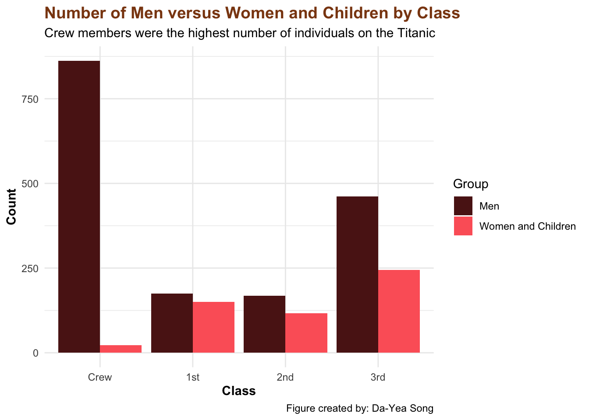
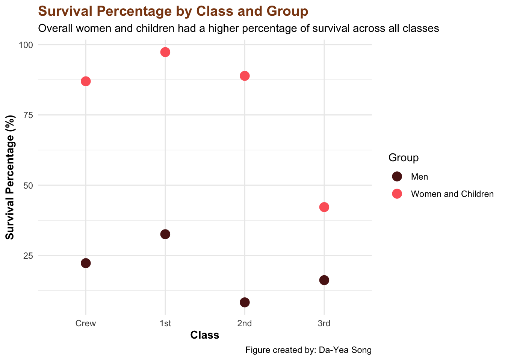
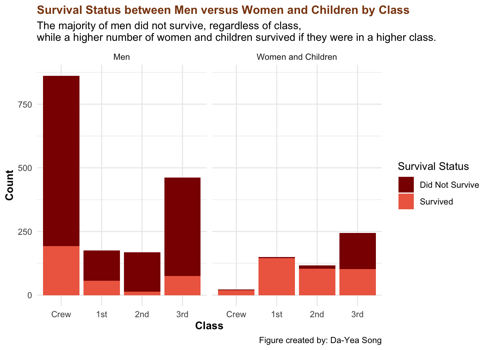

Research Question The Titanic, a British ocean liner, was renowned as the largest ship afloat and famously dubbed “unsinkable.” However, during its maiden voyage from England to New York in 1912, the ship tragically sank after striking an iceberg. This disaster led to the loss of many lives, sparking debates about survival factors, especially in the context of social class and the “women and children first” policy(Riniolo et al. 2003).
Women and Children First is a disaster protocol designed to prioritize the rescue of vulnerable individuals.*
Scene from Titanic
This analysis aims to answer the question: Did the “women and children first” policy affect Titanic survival rates differently across passenger classes?
Intended Audience This analysis is intended for data scientists and a general audience interested in understanding social dynamics through historical events. By examining survival rates across different classes and demographic groups (age and sex), we gain insight into how the “women and children first” policy may have been applied unevenly across social strata, reflecting broader societal factors at play.
Data Dictionary The data dictonary for this dataset can be found here.
Data Wrangling
library(dplyr)
Attaching package: 'dplyr'
The following objects are masked from 'package:stats':
filter, lag
The following objects are masked from 'package:base':
intersect, setdiff, setequal, union
library(ggplot2)library(MASS)
Attaching package: 'MASS'
The following object is masked from 'package:dplyr':
select
library(wesanderson)data("Titanic") # load the Titanic datasettitanic <-as.data.frame(Titanic) # convert to a data frame str(Titanic) # explore the structure of the data
titanic <- titanic %>%# convert variables from characters to numerical data mutate(Class =case_when( Class =="1st"~1, Class =="2nd"~2, Class =="3rd"~3, Class =="Crew"~0 ),Sex =case_when( Sex =="Male"~1, Sex =="Female"~2 ),Age =case_when( Age =="Child"~1, Age =="Adult"~2 ),Survived =case_when( Survived =="No"~1, Survived =="Yes"~2 ) )
titanic <- titanic %>%# create a new variable for "women and children"mutate(women_and_children =case_when( Age ==1| (Sex ==2& Age ==2) ~1,TRUE~0 ))
women_children <- titanic %>%# filter data for "women and children" filter(women_and_children =="1")
group_counts <- women_children %>%group_by(Class) %>%# group by class summarize(Total =sum(Freq)) # calculate the total frequency by summing the Freq columnprint(group_counts)
# A tibble: 4 × 2
Class Total
<dbl> <dbl>
1 0 23
2 1 150
3 2 117
4 3 244
Tip: What is the Freq variable?
In the raw dataset, each row represents a combination of class, sex, age, and survival status, along with a frequency column that indicates the number of individuals in each category. This means that rather than having individual rows for each passenger, the dataset has aggregated data, with each row showing the count of individuals with a specific combination of attributes.
In this case, instead of adding a unique ID for each individual, we can work with the Freq column to represent counts.
survival <- women_children %>%group_by(Class) %>%# group by class summarize(Total =sum(Freq), # get the total number of frequency Survived =sum(Freq[Survived =="2"])) %>%mutate(survival_percentage = (Survived / Total) *100) %>%# calculate survival percentagearrange(desc(survival_percentage)) # arrange by highest to lowest print(survival)
number <- titanic %>%group_by(Class, women_and_children) %>%# group by class and women and children summarize(Total =sum(Freq))
`summarise()` has grouped output by 'Class'. You can override using the
`.groups` argument.
ggplot(number, aes(x =as.factor(Class), y = Total, fill =as.factor(women_and_children))) +geom_col(position ="dodge") +scale_fill_manual(values =c(wes_palette("GrandBudapest1")[3], wes_palette("GrandBudapest1")[2]), # color palette labels =c("Men", "Women and Children")) +# create labels scale_x_discrete(labels =c("0"="Crew", "1"="1st", "2"="2nd", "3"="3rd")) +labs(title ="Number of Men versus Women and Children by Class", # add title subtitle ="Crew members were the highest number of individuals on the Titanic", # add subtitle caption ="Figure created by: Da-Yea Song", # add caption x ="Class", # add x-axis labely ="Count", # add y-axis label fill ="Group" ) +theme_minimal() +# theme theme(plot.title =element_text(face ="bold", color ="#8B4513", size =14), # brown color for titleaxis.title.x =element_text(face ="bold"), # bold x-axis title axis.title.y =element_text(face ="bold") # bold y-axis title )

men_survival <- titanic %>%filter(women_and_children ==0) %>%# select only mengroup_by(Class) %>%# group by class summarize(Total =sum(Freq),Survived =sum(Freq[Survived =="2"]) ) %>%mutate(survival_percentage = (Survived / Total) *100) %>%# calculate the survival percentage arrange(desc(survival_percentage)) # arrange by descending order print(men_survival)
survival <- survival %>%mutate(Group ="Women and Children")men_survival <- men_survival %>%mutate(Group ="Men")combined_survival <-bind_rows(survival, men_survival) # combine both data frames
ggplot(combined_survival, aes(x =as.factor(Class), y = survival_percentage, color = Group)) +geom_point(size =4) +# use geom_point for survival percentagescale_color_manual(values =c("Men"=wes_palette("GrandBudapest1")[3], "Women and Children"=wes_palette("GrandBudapest1")[2])) +scale_x_discrete(labels =c("0"="Crew", "1"="1st", "2"="2nd", "3"="3rd")) +labs(title ="Survival Percentage by Class and Group", # add title subtitle ="Overall women and children had a higher percentage of survival across all classes", # add susbittle caption ="Figure created by: Da-Yea Song", # add caption x ="Class", # add x-axis label y ="Survival Percentage (%)", # add y-axis label color ="Group" ) +theme_minimal() +# theme theme(plot.title =element_text(face ="bold", color ="#8B4513", size =14), # Brown color for titleaxis.title.x =element_text(face ="bold"), # bold x-axis labelaxis.title.y =element_text(face ="bold") # bold y-axis label )

stacked_data <- titanic %>%group_by(Class, women_and_children, Survived) %>%# group by class, women and children, and survival status summarize(Count =sum(Freq), .groups ='drop')
ggplot(stacked_data, aes(x =as.factor(Class), y = Count, fill =as.factor(Survived))) +geom_bar(stat ="identity", position ="stack") +scale_fill_manual(values =c("darkred", "coral2"), labels =c("Did Not Survive", "Survived")) +scale_x_discrete(labels =c("0"="Crew", "1"="1st", "2"="2nd", "3"="3rd")) +labs(title ="Survival Status between Men versus Women and Children by Class", # add title subtitle ="The majority of men did not survive, regardless of class, while a higher number of women and children survived if they were in a higher class.", # add subtitle caption ="Figure created by: Da-Yea Song", # add caption x ="Class", # add x-axis label y ="Count", # add y-axis label fill ="Survival Status" ) +facet_wrap(~ women_and_children, labeller =as_labeller(c("0"="Men", "1"="Women and Children"))) +theme_minimal() +theme(plot.title =element_text(face ="bold", color ="#8B4513", size =12), # change color and size axis.title.x =element_text(face ="bold"), # bold x-axis axis.title.y =element_text(face ="bold") # bold y-axis )

Note: How did survival differ by age?
The figure below demonstrates survival by sex and age. For women, the chance of survival was highest between the ages of 14 and 40. For men, the chance of survival was highest between the ages of 18 and 30.
Summary of Results Based on the analysis, a total of 534 women and children were aboard the Titanic, distributed as follows: 150 in 1st class, 117 in 2nd class, 244 in 3rd class, and 23 crew members. Their survival rate showed a decreasing trend across classes, with a higher survival percentage in higher classes. The majority (over 80%) of women and children in 1st and 2nd class, as well as among the crew, survived, while less than half of those in 3rd class did. This survival rate for 3rd class women and children is comparable to that of men, the majority of whom did not survive. Among men, survival was highest in 1st class and among the crew, followed by 3rd class, with the lowest survival rate observed in 2nd class.
List of Functions
Data wrangling with dplyr/tidyr functions: - mutate() to create new variables - filter() to filter data - group_by() for grouping - summarize() for calculating totals - arrange() for ordering results
Three plots with different geom_ functions: - geom_col() for bar plots - geom_point() for survival percentage plot - geom_bar() for the stacked bar plot
Faceting in at least one plot: - facet_wrap() in the stacked bar plot
Include two different callout blocks: - Tip about the frequency variable - Note discussing survival by age and sex
Reference at least three unique citations: - article - dataset - misc
Margin content: Image from Titanic and text to explain the ‘women and children first’ policy
Riniolo, Todd C., Michael Koledin, Goran M. Drakulic, and Robert A. Payne. 2003. “An Archival Study of Eyewitness Memory of the Titanic’s Final Plunge.”The Journal of General Psychology 130 (1): 89–95. https://doi.org/10.1080/00221300309601277.